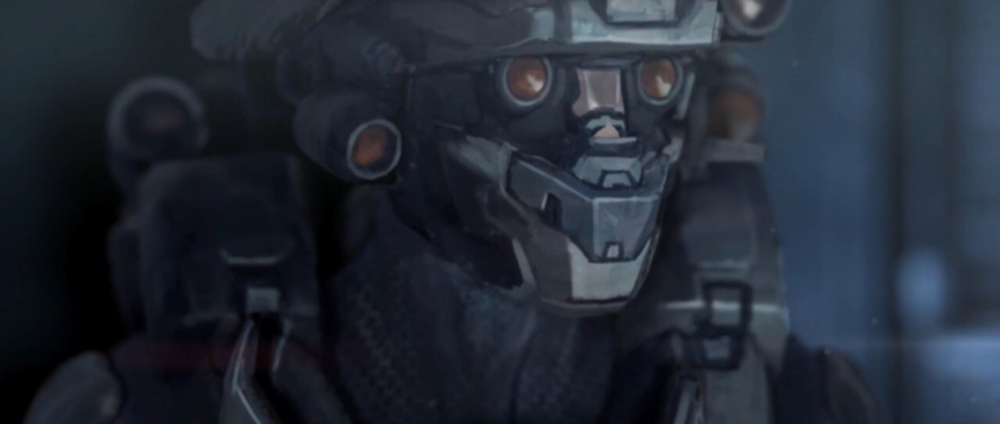
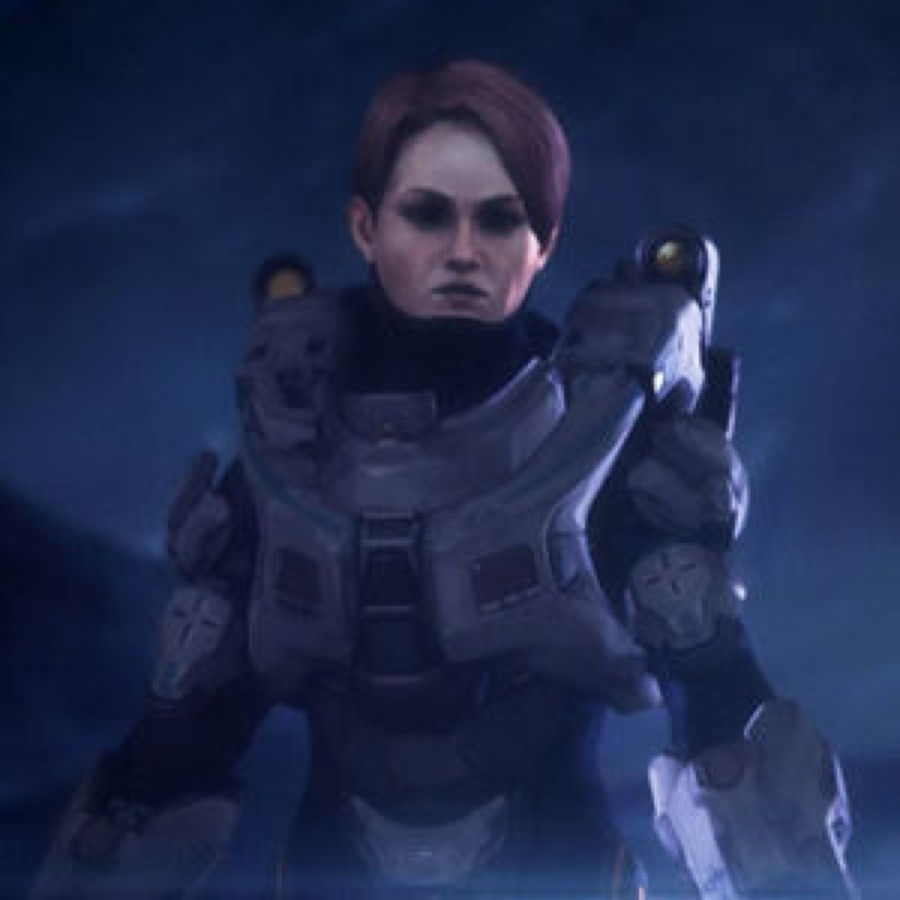
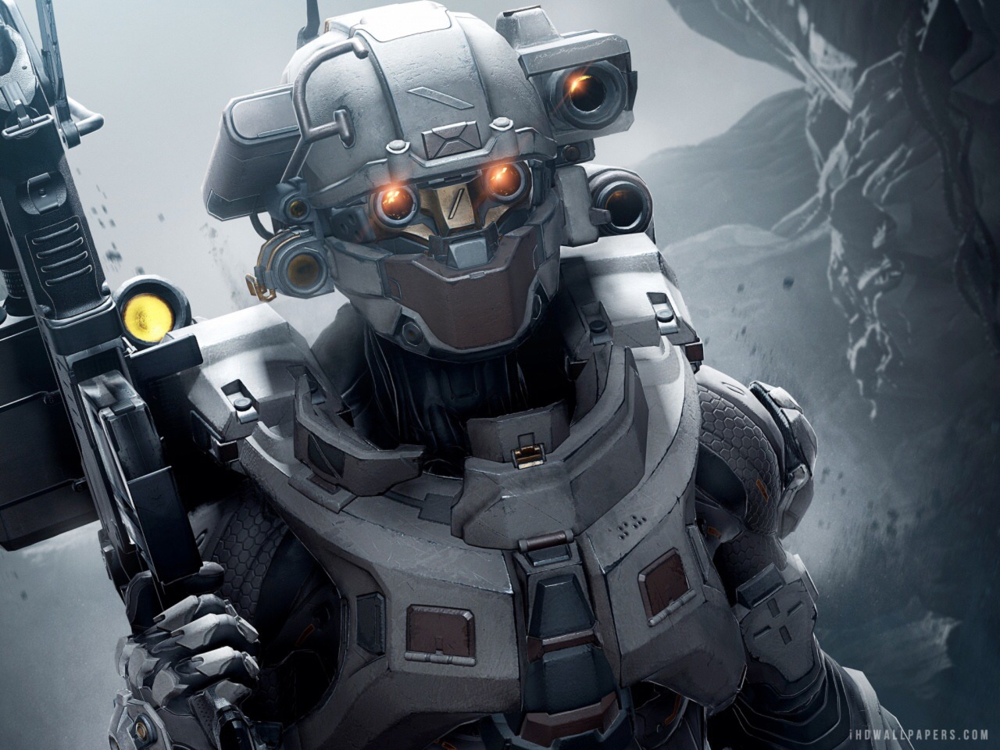

Petty Officer, First Class Linda-058, born Linda Pravdin, is a SPARTAN-II supersoldier. She is one of the closest friends to John-117 and one of the few known surviving Spartan-IIs. She is best known for her skill with the sniper rifle and serves as the sniper and scout of Blue Team. By 2558, she had engaged in a total of 189 military operations (of which 174 were full campaigns), most of them during the Human-Covenant War. As of most recent knowledge, Linda continues to serve alongside Blue Team in highly classified operations.